Generates plots for mlr3::BenchmarkResult, depending on argument type:
"boxplot"(default): Boxplots of performance measures, one box per mlr3::Learner and one facet per mlr3::Task."roc": ROC curve (1 - specificity on x, sensitivity on y). The mlr3::BenchmarkResult may only have a single mlr3::Task and a single mlr3::Resampling. Note that you can subset any mlr3::BenchmarkResult with its$filter()method (see examples). Requires package precrec. Additional arguments will be passed down to the respectiveautoplot()function in package precrec. Argumentscalc_avgandcb_alphaare passed toprecrec::evalmod()."prc": Precision recall curve. See"roc".
# S3 method for BenchmarkResult autoplot(object, type = "boxplot", measure = NULL, ...)
Arguments
| object | |
|---|---|
| type | (character(1)): |
| measure | |
| ... | ( |
Value
ggplot2::ggplot() object.
References
Saito T, Rehmsmeier M (2017). “Precrec: fast and accurate precision-recall and ROC curve calculations in R.” Bioinformatics, 33(1), 145-147. doi: 10.1093/bioinformatics/btw570 .
Examples
library(mlr3) library(mlr3viz) tasks = tsks(c("pima", "sonar")) learner = lrns(c("classif.featureless", "classif.rpart"), predict_type = "prob") resampling = rsmps("cv") object = benchmark(benchmark_grid(tasks, learner, resampling)) head(fortify(object))#> nr task_id learner_id resampling_id classif.ce #> 1: 1 pima classif.featureless cv 0.3116883 #> 2: 1 pima classif.featureless cv 0.4025974 #> 3: 1 pima classif.featureless cv 0.3506494 #> 4: 1 pima classif.featureless cv 0.4155844 #> 5: 1 pima classif.featureless cv 0.3896104 #> 6: 1 pima classif.featureless cv 0.2597403